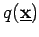
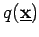

Inhalt Index DeskTop Bronstein

 Optimierung Nichtlineare Optimierung Verfahren für unrestringierte Aufgaben
Optimierung Nichtlineare Optimierung Verfahren für unrestringierte Aufgaben


Die Funktion f wird im aktuellen Näherungspunkt  durch eine quadratische Funktion approximiert:
durch eine quadratische Funktion approximiert:
| (18.77) |
Dabei ist die HESSE-Matrix, d.h. die Matrix der zweiten partiellen Ableitung von f im Punkt  . Ist positiv definit, dann hat  an der Stelle
. Ist positiv definit, dann hat  an der Stelle  mit ein globales Minimum, und man erhält für das NEWTON-Verfahren die Iterationsvorschrift
mit ein globales Minimum, und man erhält für das NEWTON-Verfahren die Iterationsvorschrift
Das NEWTON-Verfahren hat eine hohe Konvergenzgeschwindigkeit, der aber folgende Nachteile gegenüberstehen:
Einige Nachteile können durch die folgende Version eines gedämpften NEWTON-Verfahrens behoben werden:
| (18.79) |
Der Dämpfungsfaktor  kann unter anderem durch Strahlminimierung ermittelt werden.
kann unter anderem durch Strahlminimierung ermittelt werden.